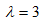
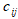
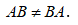
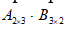

2. Умножение матрицы на число.
Чтобы умножить матрицу на число, нужно каждый элемент данной матрицы умножить на это число.
Пример. Найти произведение матрицы A на число  , если
Решение:
3. Произведение матриц.
Две матрицы можно перемножить только тогда, когда число столбцов первой матрицы (умножаемого) равно числу строк второй матрицы (множителя). Произведением матрицы A на матрицу B называется новая матрица C , у которой элемент  , стоящий на пересечении i-ой строки и j-го столбца, равен сумме произведений элементов i- ой строки матрицы A на элементы j-го столбца матрицы B. Матрица C имеет столько строк, сколько строк у матрицы A , и столько столбцов, сколько столбцов у матрицы B. Правило умножения матриц называют «строка на столбец ».
Свойства:
1) Для операции умножения матриц в общем случае не выполняется свойство перестановки, т.е.  .
2) Выполняется свойство сочетательности умножения, т.е.
Пример. Найти произведение матриц и :
Решение:
Проверим, существует ли произведение AB. , 3=3 , число строк первой матрицы 2, и число столбцов во второй матрице 2, значит, произведение AB существует, определим размерность получаемой матрицы – произведение: